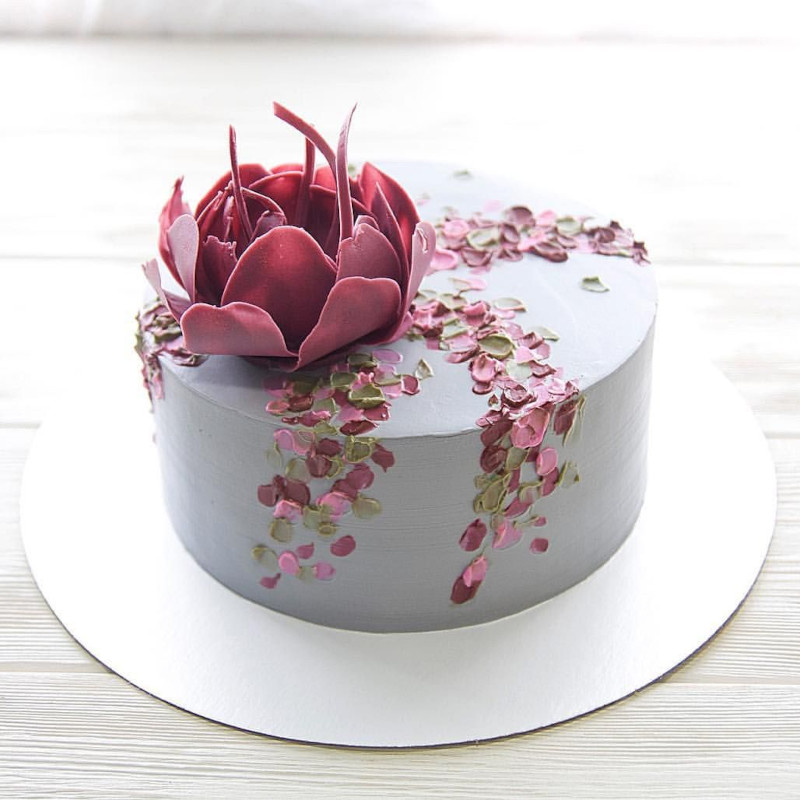

торт- кондитерское изделие, состоящее из нескольких коржей, пропитанных кремом или джемом. Сверху торт обычно украшают кремом, глазурью или фруктами. Коржи для большинства тортов изготовляются из бисквитного или песочного теста, классические торты представляют собой комбинацию из тонкого песочного коржа (для более стабильного основания) и одного или нескольких бисквитных коржей. Также для тортов иногда используют слоёное тесто или вафельные коржи. Для смазывания коржей обычно используют повидло, крем из сливочного масла или сливок с сахаром, сгущённое молоко.
макаруны французское кондитерское изделие из яичных белков, сахара и молотого миндаля. Обычно делается в форме печенья; между двумя слоями кладут крем или варенье. Итальянское название maccarone/maccherone происходит от слова ammaccare — «разбить, раздавить», и является отсылкой к способу изготовления основного ингредиента, миндальной муки. Готовое изделие мягкое, с гладкой поверхностью, тает во рту. Разнообразно по вкусу.
капкейки — маленькие бисквитные пирожные, стильно украшенный кекс для одного. В переводе с английского слово cupcake означает «торт в чашке». Зато они не требуют разрезания на порции. В основе классического рецепта — мука, сахар, яйца и масло. Чаще всего в тесто добавляют ягоды, орехи, изюм или шоколадную крошку.
бенто торты - это мини тортики весом 400-500 гр и размером примерно 9-10 см в диаметре и 6-8 см в высоту. Такого тортика хватит на 1-3 человек, в зависимости от того, хочет получатель поделиться таким тортиком с кем-то или мечтает хотя бы один раз в жизни съесть торт сам. Эти тортики характеризуются различными картинками, надписями и легкой небрежностью. Такие тортики обычно упаковываются в ланч бокс из сахарного тростника, а в комплекте часто прикладываются деревянные ложечки и праздничные свечки.
Сайт створено у секретній українській біолабораторії